Guys!
当你走出学校踏入社会，还在为伙食发愁吗？
还在延续着点外卖的习惯吗？
还在快餐店里解决自己的三餐吗？
收藏我们的网站，让每一顿因自己而充实！
食谱推荐
当今最流行的食谱
让你轻松拥有健康的饮食习惯
菜品名称：汉堡
简介：汉堡胚回温加上简单的奶酪、鸡蛋…… 营养早餐，充足活力。
材料：高粉250克，细砂糖20克，盐5克，奶粉5克，酵母3克，牛奶150克，黄油25克
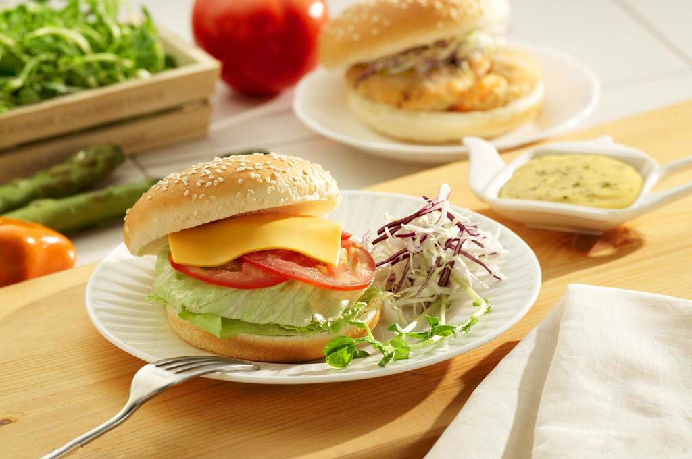
菜品名称:西多士
简介：吐司，是英文toast的音译，粤语叫多士，实际上就是用长方形带盖或不带盖的烤听制作的听型面包。用带盖烤听烤出的面包经切片后呈正方形，夹入火腿或蔬菜后即为三明治。用不带盖烤听烤出的面包为长方圆顶形，类似我国的长方形大面包。
材料:原味土司：2片 花生酱：适量 鸡蛋：1个 面包糠：适量 炼奶：适量
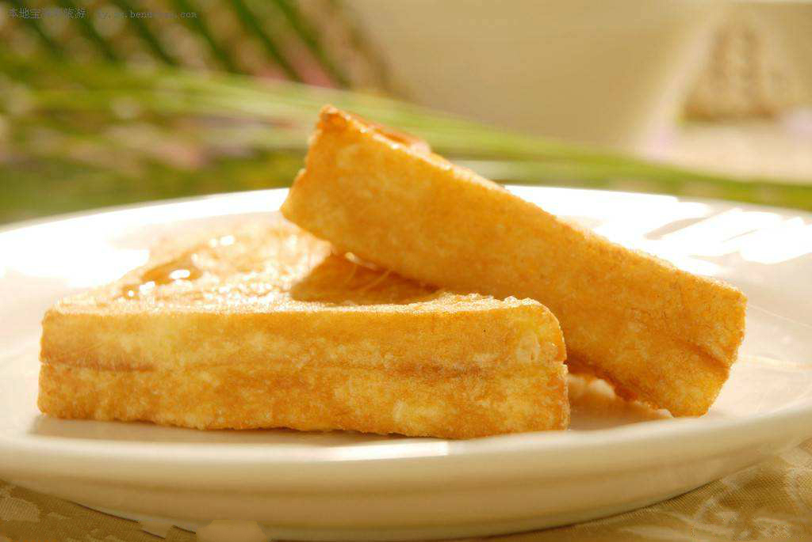
菜品名称:Egg benedict
简介：一个水波蛋，配上黑胡椒和柠檬蜜，让这个早晨充满柠檬的香气~~~
材料：面包 鸡蛋 莴苣 黑胡椒 柠檬蜜
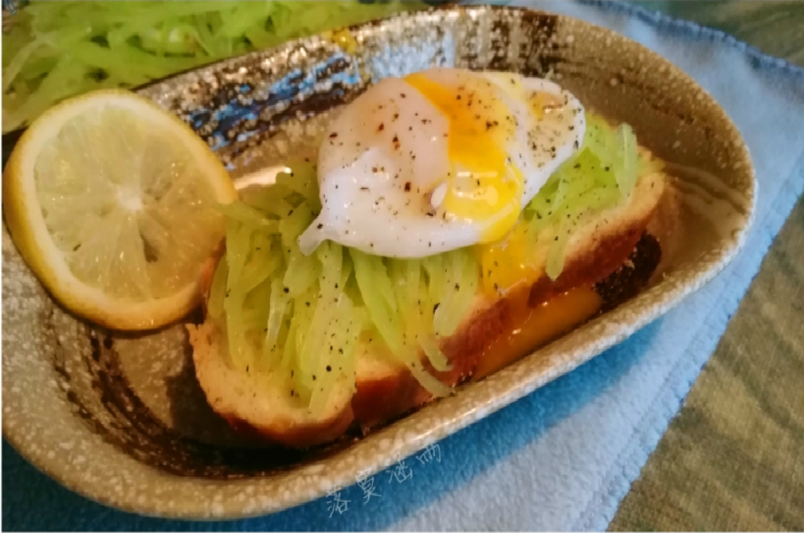
菜品名称:担担面
简介：担担面是四川小吃中的代表性食物，为人们品尝四川小吃时的必备佳肴。
材料：面粉，肉，黄豆，蒜末，辣椒油，花椒面，香葱末，芝麻酱，酱油，白糖
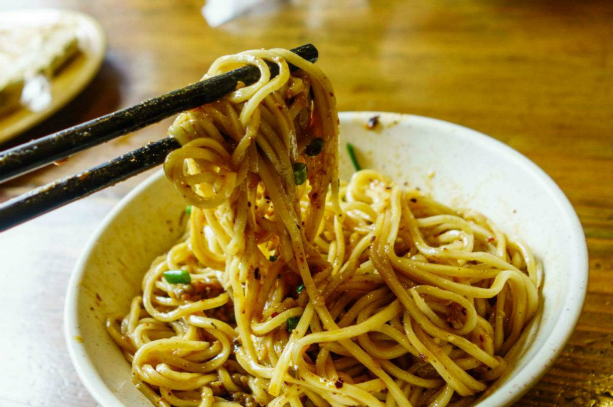
菜品名称：意大利肉丸子
简介：Italian肉丸子是加在红通通的番茄酱之中，巴西利和奥勒冈的味道十足，意式番茄味道紧紧包住肉丸子
材料：牛绞肉 洋葱 土司边 蛋 番茄糊 新鲜巴西利 新鲜奥勒冈 盐巴 黑胡椒
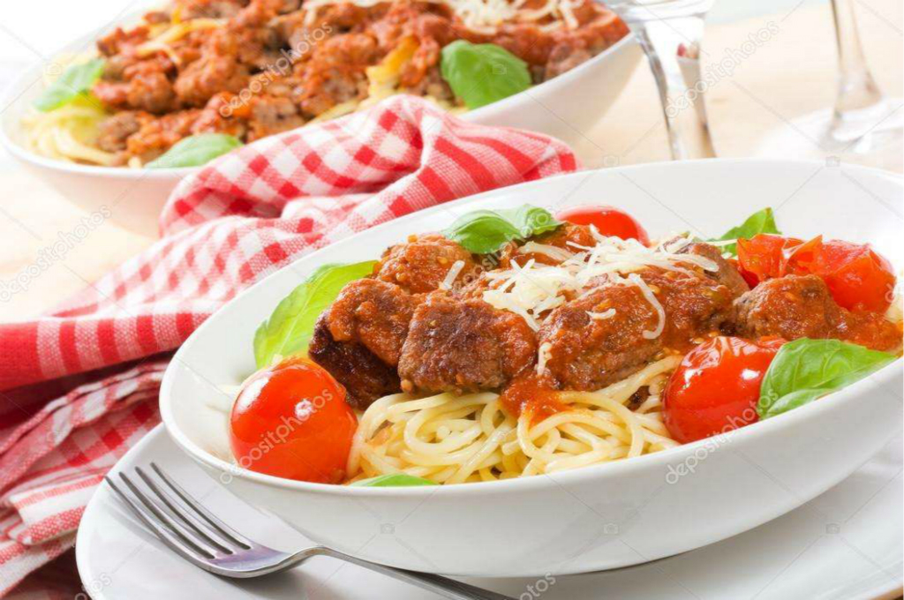
菜品名称：酥炸起士猪肉卷
简介：Costco一大包的起士,善加利用可以做起士焗烤面,起士焗烤饭,酥炸起士猪肉卷,不怕大包用不完~
材料：猪里肌肉片 胡椒盐 起士条 蛋液 面粉 面包粉
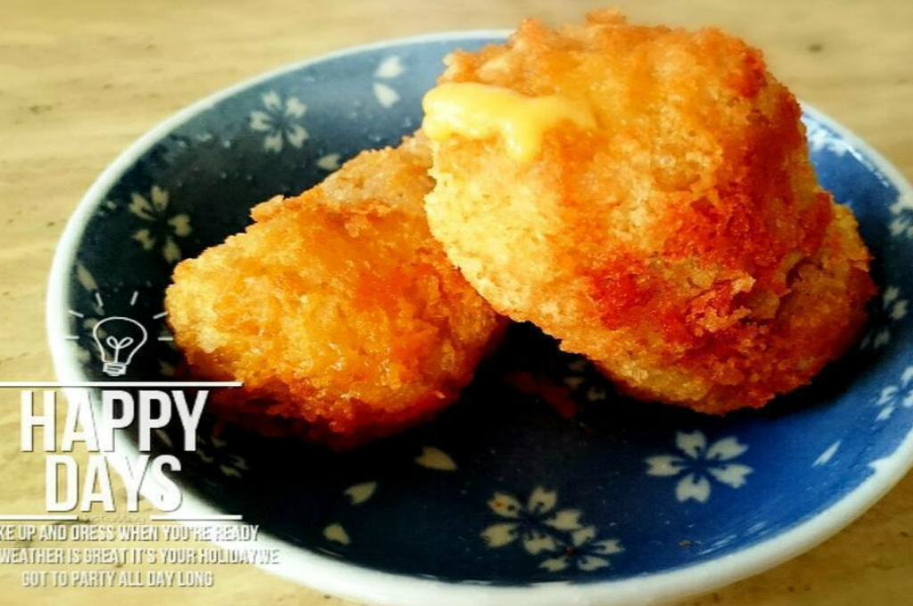
菜品名称：意大利式牛奶胡萝卜
简介：以胡萝卜为主要食材制作的美食
材料：胡萝卜，鲜牛奶
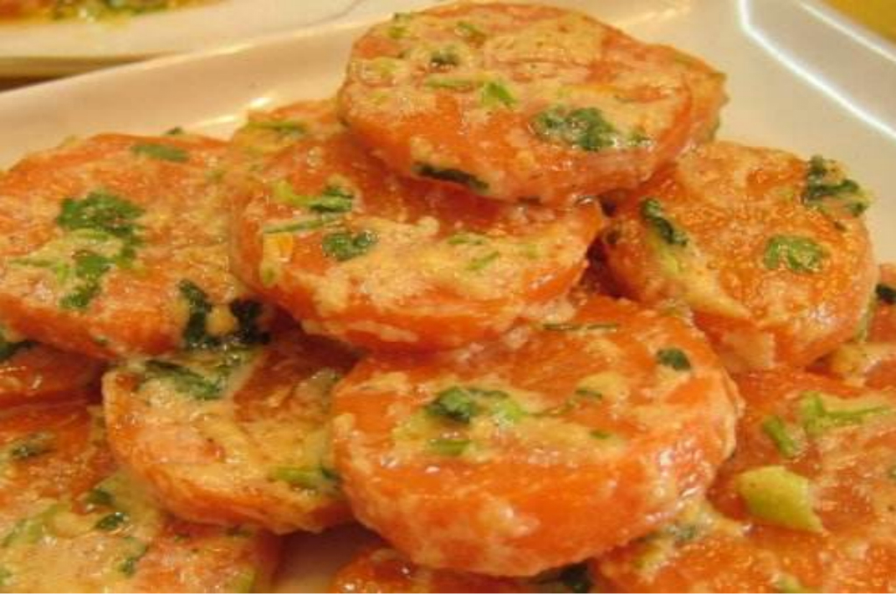
菜品名称:蓝带鸡排佐蔬菜沙拉
简介：西餐主菜
材料：鸡胸肉一块，培根2片，鸡蛋一个，切达芝士2片，面包糠适量
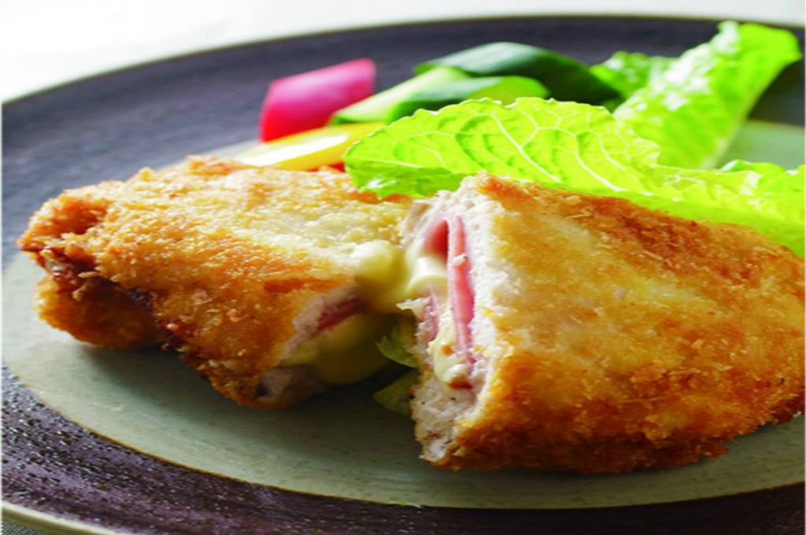
菜品名称：热带海鲜炬饭
简介：西餐主菜
材料：速冻的干贝 虾仁 淡菜 黄油 大蒜 洋葱 萝卜 青椒 菠萝片 米饭 马苏芝士
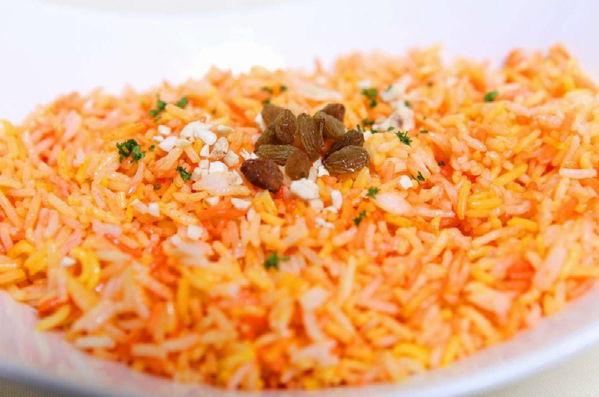
菜品名称：杨枝甘露
简介：夏天香浓的芒果，搭上酸酸的葡萄柚，正如那烈日下久逢的甘露，一饮而尽，太清凉啦!
材料：芒果 西米露 椰奶 糖 葡萄柚 牛奶
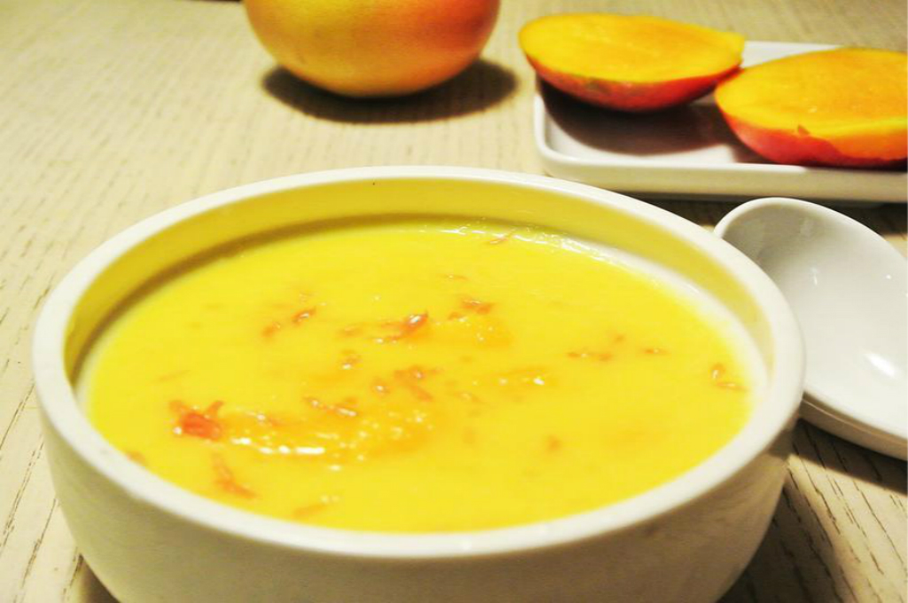
菜品名称：香蕉欧姆蛋卷
简介：香蕉搭配蛋卷吃起来有种幸福的感觉
材料：蛋 砂糖 松饼粉 奶油 鲜奶油霜 香蕉 沙拉油/奶油
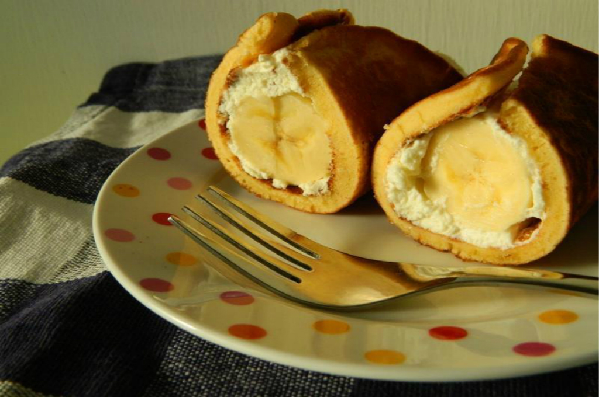
菜品名称：洋菜百香果冻
简介：酸酸甜甜绝美滋味，加入洋菜做成果冻，天然食材吃得安心，冰冰凉凉消暑甜点，适合炙热夏天享用。
材料：洋菜粉 新鲜百香果 水(依照洋菜粉说明添加)
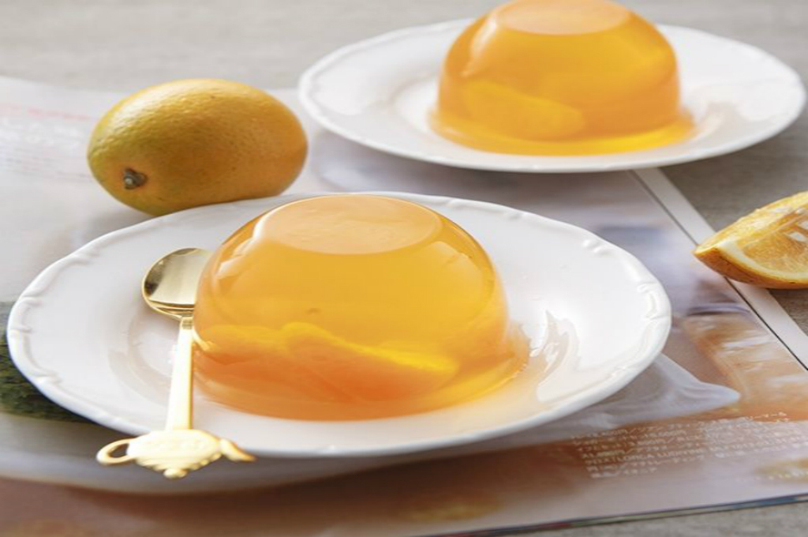
唯美食不可辜负!
踏入社会的你
也请不要忘记生活
不必被时间束缚!
静下心来想一想
我的胃现在想吃什么


{kind=link}
{kind=link}
{kind=link}
{kind=link}
{kind=link}
{kind=link}
{kind=link}
{kind=link}
{kind=link}
{kind=link}
{kind=link}
{kind=link}